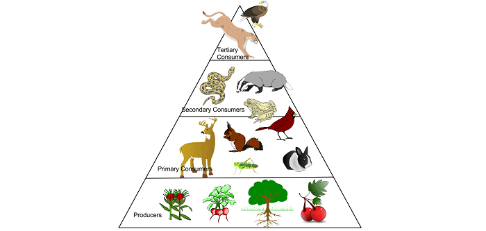

@be100you
Explore 100% de ton potentiel !
Par définition, un « Régime Vegan » 🌱, également appelé « régime végétalien » ou « à base de plantes », est un régime qui ne comprend aucun produit d'origine animale et leurs dérivés, comme par exemple la viande animale, le lait , les œufs, le miel, etc. 🐖🐄🐔
C'est important de comprendre que lorsque nous parlons ici d'un « régime », ce n'est pas un plan à court terme pour atteindre un objectif, tel que « perdre du poids » ou « gagner des muscles ». Ici, « régime » est simplement la nourriture habituelle consommée par une personne.
Ne tombons pas dans le piège de penser qu’un régime vegan est sain par définition. Vous pouvez avoir un régime à base de plantes où vous ne mangez que d'énormes quantités de frites 🍟 et de grandes tablettes de chocolat noir 🍫… Mais devinez quoi ? Ce n’est pas du tout sain !
Ci-dessous nous discuterons des manières d'optimiser un régime vegan et des possibles avantages d'un tel régime à court et à long terme.
Qui peut manger un régime à base de plantes ?
— Les Athlètes, les personnes avec des problèmes de santé, etc.
Pourquoi une alimentation à base de plantes ?
— Maladies cardiovasculaires, Cancer, Diabète, etc.
Comment puis-je manger à base de plantes ?
— Nutriments, Apports journaliers, etc.
Recettes vegan
— Lasagne, Burger, Mousse, Cookies, Gâteau, etc.
D'autres raisons...
— Environnement, bien-être animal et humain, santé individuelle, etc.
Qui ?
La réponse courte : tout le monde. 🙋♂️🙋♀️
La réponse longue :
L'Académie de nutrition et de diététique, qui est la plus grande organisation de professionnels de l'alimentation et de la nutrition, avec plus de 100 000 praticiens accrédités, a publié un article déclarant que « Ces régimes [végétariens et végétaliens] conviennent à toutes les étapes du cycle de vie, y compris la grossesse, l'allaitement, la petite enfance, l'enfance, l'adolescence, l'âge adulte et pour les athlètes ». [1]
Les personnes souffrant de problèmes de santé :
Les personnes souffrant de maladies, génétiques ou pas, doivent accorder une attention particulière à leur alimentation, car la nourriture a un impact fondamental sur notre santé.
Comme tout autre régime, pour être sain et adéquat, le régime vegan doit être correctement planifié, et pour cela une personne malade doit appeler un professionnel du domaine de la nutrition. 👩⚕️👨⚕️
Athlètes amateurs et professionnels :
Les athlètes ont besoin d'une alimentation spécialement conçue pour optimiser leurs performances dans le sport qu'ils pratiquent, à titre professionnel ou amateur.
De nombreux athlètes sont vegan. Dans le lien ci-dessous, nous voyons une liste de plus de 100 athlètes vegan de différents domaines sportifs, y compris le football, la musculation, le snowboard, etc.
⚽🏋🏂 www.GreatVeganAthletes.com/all-athletes
Mais que nous dit la science sur les athlètes ?
La vidéo ci-dessous, avec plus de 300 sources combinées, compare les performances sportives des personnes suivant un régime omnivore et de celles suivant un régime végétarien. La conclusion n'a montré aucune amélioration majeure de la performance à court terme, ce qui signifie que les deux groupes d'athlètes suivant des régimes bien planifiés ont obtenu des résultats similaires.
Mais comme les études l'ont montré, et la vidéo le rappelle à la fin (avec de beaux effets visuels et sonores 🤣) :
« Peu importe à quel point vous êtes fort, si vous êtes mort 🔥 » [accent dramatique ici]
La vidéo fait référence aux avantages à long terme d'un régime à base de plantes, dont nous discuterons dans les sections suivantes.
Si vous êtes intéressé, nous pouvons vous donner des conseils personnels pour comprendre et concevoir un plan alimentaire : 🍊🍫 be100you.com 🥑🍪
Les vidéos présentées montrent des preuves d'articles publiés dans des recherches scientifiques. Vous trouverez tous les articles dans les descriptions des vidéos. Nous ne sommes en aucun cas sponsorisés par eux.
Pourquoi ?
La réponse courte : des bienfaits pour la santé à long terme. 💪
La réponse longue :
L'un des plus grands régimes de soins de santé à but non lucratif aux États-Unis, le Kaiser Permanente, a publié « Nutritional Update for Physicians » (montré dans la vidéo ci-dessous), dans lequel ils déclarent « une alimentation saine peut être mieux obtenue avec un régime à base de plantes, défini comme un régime qui encourage les aliments entiers à base de plantes et décourage la viande, les produits laitiers, les œufs ainsi que tous les aliments raffinés et transformés ».
Une revue de revues d'études (c.à.d. un étude qui a analysé et condensé les informations de nombreux articles différents) a montré que les aliments à base de plantes ont beaucoup plus souvent des effets protecteurs sur la santé, tandis que les aliments d'origine animale ont souvent des effets néfastes sur la santé. Le résumé de la revue est disponible ici :
Maladies cardiaques :
Il a été démontré qu'un régime alimentaire complet à base de plantes permet de faire disparaître les maladies cardiaques, en débouchant littéralement les artères. Le terme « aliment entier » signifie qu'il est basé sur des aliments non transformés et non raffinés, ou transformés et raffinés le moins possible. Les vidéos suivantes comparent de nombreuses études sur les régimes méditerranéens et végétaliens :
Et les études dans la vidéo ci-dessous indiquent que les personnes qui consomment moins de produits d'origine animale (parfois appelées « flexitariens ») ont tendance à vivre plus longtemps :
N'hésitez pas à faire des recherches par vous-même afin de mieux comprendre les affirmations ci-dessus. Avant de continuer, nous devons reconnaître que les conclusions ci-dessus montrent de nombreux avantages d'un régime vegan, mais ce n'est pas un remède miraculeux. Il peut aider de nombreuses personnes à vivre en meilleure santé et plus longtemps, y compris vous, et si vous considérez que cela vaut la peine d'essayer nous pouvons vous aider à adapter votre alimentation, pour cela rendez vous sur : 🍊🍫 be100you.com 🥑🍪
Un régime végétalien peut être optimisé pour vous offrir les avantages indiqués ci-dessus.
Transformer votre alimentation en une alimentation à base de plantes implique de changer les habitudes et d'adapter les modèles que nous avions appris dans le passé.
Beaucoup de gens ont des habitudes alimentaires inconscientes et ne se soucient pas vraiment de ce qu’ils mangent. Ils peuvent simplement se conformer aux traditions de leur communauté, suivre un comportement de groupe ou céder aux normes sociales.
Choisir de manger plus sainement est une décision qui doit être prise consciemment et en utilisant les meilleures sources de connaissances disponibles, afin de garantir la santé à court et à long terme.
Les nutriments :
Étant donné que nos cultures et traditions ne sont parfois pas bonnes pour nous fournir des informations sur la façon de manger sainement, nous devons nous adapter et apprendre par des professionnels et des sources fiables, garantissant ainsi que nous n'aurons pas de problèmes dans notre alimentation.
Une liste de recommandations est disponible ici : 🌱 Recommandations
Apports journaliers :
Pour vous aider à construire votre nouveau régime vegan, il y a aussi une idée qui peut vous aider : « Daily Dozen », qui est essentiellement une liste contenant les types d'aliments (et leurs quantités respectives) que vous devriez manger quotidiennement : 📝 Daily Dozen 1 et 📝 Daily Dozen 2
Un autre excellent outil que nous vous recommandons d'utiliser est Cronometer, qui vous aide à calculer non seulement l'apport en macronutriments (glucides, graisses, protéines), mais également en micronutriments (vitamines et minéraux): 🎯 Cronometer.com
Nous pouvons également vous aider à adapter votre alimentation à une alimentation vegan, il suffit de visiter : 🍊🍫 be100you.com 🥑🍪
Mousse au chocolat
Gâteau au chocolat
Cookies de 3 minutes
Blueberry Pancakes
Pain d'avoine aux lentilles
Macaroni et fauxmage
Lasagne patates douces
Burger plant-strong
Nous trouvons également quelques plans pour une diète vegan « prêts à l'emploi » ici : 🥣🍓 veganhealth.org/meal-plans
Devenir vegan a des effets positifs dans d'autres domaines de la vie. Il comprend une multitude d'autres raisons, qui ont chacune leurs avantages respectifs :
Protection environnementale :
Une étude [2-4] de 2018 a montré qu'un mode de vie vegan a de nombreux avantages environnementaux. Un documentaire [5] de 2014 montrait déjà la même chose. Quelques informations à propos du régime vegan :
— Il peut réduire jusqu’à 73% l’empreinte carbone des aliments d’un individu ;
— L'utilisation mondiale des terres agricoles pourrait être réduite de 75% (une superficie équivalente à la taille des États-Unis, de la Chine, de l'Australie et de l'UE réunis) ;
— Transformer l'herbe en [viande], c'est comme convertir le charbon en énergie. Cela a un coût énorme en émissions de gaz à effet de serre ;
— Alors que la viande et les produits laitiers ne fournissent que 18% des calories et 37% des protéines, ils utilisent la grande majorité (83%) des terres agricoles et produisent 60% des émissions de gaz à effet de serre de l’agriculture ;
— L’industrie de la viande et des produits laitiers utilise 33% de l’eau douce de la planète ;
— L'agriculture animale est responsable pour jusqu'à 91% de la destruction de l'Amazonie ;
— L'eau pour la production d'un hamburger équivaut à une douche pendant 2 mois (3000 litres d'eau).
Le documentaire de 2014 [5] montre bien d'autres impacts environnementaux, tels que l'utilisation et la pollution de l'eau, l'utilisation et la pollution des terres, les émissions de gaz à effet de serre, la désertification des terres, l'extinction d'espèces, la destruction des forêts: 🐮 Cowspiracy.com
Bien-être humain :
La logique ici est simple : chaque fois que vous montez dans la « chaîne alimentaire » vous perdez une grande partie de la nourriture qui était donnée à l'être en dessous de vous. C'est l'une des raisons pour lesquelles les aliments d'origine animale ont un plus grand impact sur l'environnement, et c'est aussi l'une des raisons pour lesquelles de nombreuses personnes sur la planète n'ont pas de nourriture à manger : parce que la plupart des aliments (grains en particulier) que nous produisons servent à nourrir les animaux que nous mangerons plus tard.
Dans [6], le Dr. Walt Willett - professeur de médecine à l'Université de Harvard - dit que « nous pourrions éliminer les pires cas de faim dans le monde aujourd'hui avec environ 40 millions de tonnes de nourriture ; pourtant 760 millions de tonnes sont données aux animaux dans les fermes chaque année ».
Bien-être animal :
À l'heure actuelle, nous tuons littéralement plus de 150 milliards d'animaux par an [7]. Pour mettre les choses en perspective : si nous tuions un humain pour chaque autre animal non humain que nous tuons, il ne resterait aucun (zéro) humains en moins de 19 jours.
« Une image vaut mieux que mille mots. »
Ce documentaire montre la réalité de l'industrie des aliments d'origine animale : 🐂🦊🐇 WatchDominion.com
Bien que son contenu soit difficile à regarder pour certaines personnes, les procédures, les ustensiles et les machines indiqués sont parfaitement légaux et conformes aux normes de l'industrie.
Un documentaire probablement « plus facile à digérer » est : 🕊️🐈🐯 Hope-TheProject.com
Earthlings est un autre film qui parle d'éthique et de spécisme dans la manière dont nous traitons la plupart des animaux. Une « édition anniversaire » gratuite est disponible ici : 🌐🐶🐡 NationEarth.com
Santé individuelle :
Pour terminer cet article, nous citons quelques documentaires parlant des bienfaits individuels pour la santé d'un régime à base de plantes. Si vous êtes intéressé, vous pouvez aller les regarder ici :